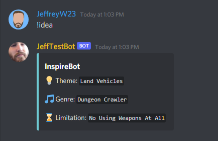
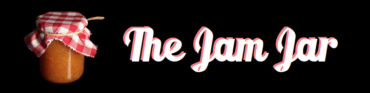
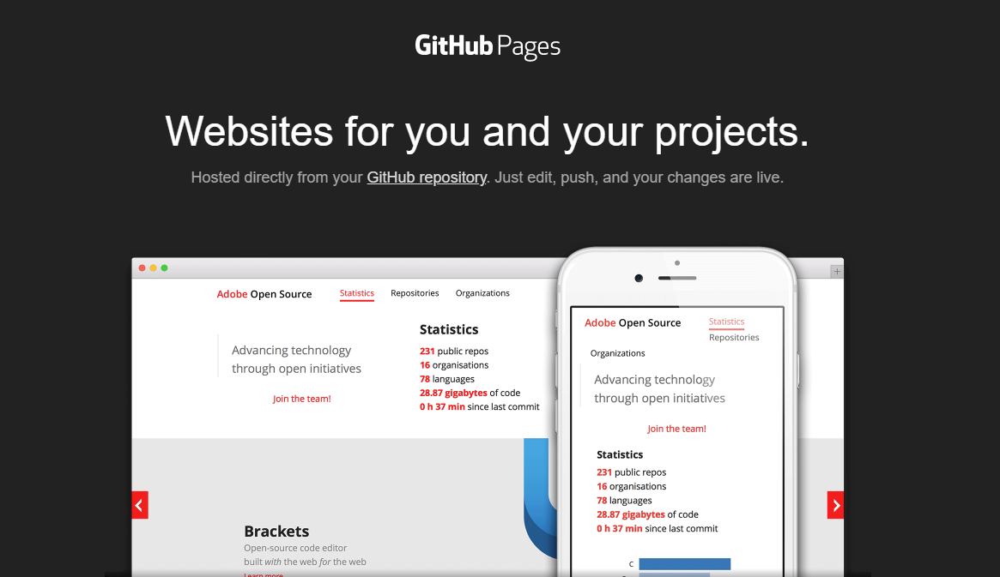

The successful hosting of a server over the internet, four players together and FOV working perfectly!
2:03 AM (AEST), October 6th, 2021
It's only been a few days since my last post where I successfully implemented multiplayer in my latest project, An Infestation, but in that time, I've got even more done! Almost half of the main features in the game are now working over a network, most notable being the Field Of View system; Which has everything from the shadow projection and basic Fog Of War effect to Toggling On and Off for some epic Hide'n'Seek action with other players!
Another notable change from a few days ago is the ability to host a game with a build and get my friends to connect over the internet during lockdown with nothing more than requiring port forwarding on my network. I successfully hosted and had four friends running around hiding in the dark. See the video above!
I know everything I am doing in the grand scheme of things is simple, but multiplayer has always been something I was scared of doing in my games development, so every tiny little detail I can achieve is huge to me, like a dream come true!
Anyway, just a small update today! While there is still lots of work, I am still rather proud of my efforts so far and look forward to getting the Fog Of War effect working fully, inventory and interactable items working and of course, shooting too!
Using the power of MLAPI, I added multiplayer to my single-player game in a little over a day.
2:29 AM (AEST), October 2nd, 2021
Now that the progress updates are out of the way, it's time to talk about the next project I started, and that's getting back into the development of An Infestation.
An Infestation is a game I worked on almost exactly a year ago. It was one of the first projects I started working on in Unity after finishing university and I am very proud of it. Sadly I hadn't developed it further until this week because of a lack of motivation and ideas for how it could be fun. One thought that came to mind to address the fun problem was multiplayer; for something supposed to be scary, it might be fun to turn towards a player-versus-player experience like murder in the dark (A game I cherish from my childhood).
To get started, I needed to figure out how I would implement networking in my game. After a lot of research and experimentation with different techniques in Unity for multiplayer implementation, I settled on a simple solution called MLAPI, which seem to be the (new?) official system for doing networking in Unity. That's almost where this post ends; after a 15-minute video, I had it working! Obviously, the multiplayer isn't working 100% but still very impressive for something I was worried would take weeks.
Currently, the multiplayer of An Infestation consists of two player-controlled characters connecting over a network. Players can move and rotate independently, including the arm, and affect the Fog Of War of each connected client. The next plan for multiplayer features is full Field Of View and Fog Of War support with the vision cone (Players torch/light source) for each player, giving the game a sense of darkness and presence of other players in the world.
I got started in MLAPI by following SRCoder's video he published as a part of a series on MLAPI. I only watched the first two parts for what I needed, but I highly recommend his videos, found them very helpful!
Channel: https://www.youtube.com/channel/UCYaNsGvyvIupxpecr4rZY9A
MLAPI Tutorial: https://www.youtube.com/watch?v=qJMXv5J4wf4
I haven't posted in a little, sorry about that..
2:09 AM (AEST), October 2nd, 2021
Just a small update before main post today, I suddenly realised this morning that I haven't posted in a little while but have still been working on projects. So I thought I would make a small post with an update, but talk later about something I did yesterday just for some fun, which turned into multiplayer for my old An Infestation project.
Since my last post a month ago, a few things got done but not as much as I hoped. COVID19 and still being in lockdown has been an emotional rollercoaster, some days being hard to get motivated, but I have tried, and I'm happy with that at the very least.
Firstly I did some minor updates to the JamJar bot, published it on a few websites and got a nice amount of installs! After JamJar, I started looking into Discord.NET, an API for developing Discord bots in C#, but sadly I lost motivation without a clear idea for my next bot. Lastly, I started developing a custom 2D engine written in C++ as a hobby project, the idea being to keep my mind refreshed on the language. I'll post something on it soon.
Sometimes as a programmer, you are so lazy that you just make bots to do stuff for you.
3:45 AM (AEST), August 24th, 2021
All I've wanted from these new lockdowns in Australia is to develop a new project or two, but ideas aren't flowing as well as they usually do when I can be out and about in the world being inspired by things. I decided the best solution for this was using a Game Jam to get inspired, which resulted in me thinking: "How do they come up with themes? Generated right? Is there a Discord Bot, so I can always have it ready?". Nope, it didn't look like there were any Discord Bots. "I suppose I could make one and think of a game idea along the way!". (Spoilers: No game idea, but I did make a bot!)
So I do have some experience making Discord Bots. Last year I spent a night creating and learning how to create my first bot ImpostorBot, a bot created to take advantage of the Among Us trend and make it easier to invite players. I spent a week or so polishing up ImpostorBot, playing with different Discord features, and that was that. I haven't had another idea until now, which I was surprised to find that development was easy compared to the last. See, all this idea took was learning how to do JSON parsing, which is the same as I expected, and then getting a list of themes, genres and limitations to use for the random generation.
Genres and Limitations for the bot were easy to write; I wrote the Limitations myself and genres based on research of classic and modern-day genres used in the industry. However, the Themes list required a little more work. Initially, the development of the Themes list was manual and written by myself; this was slow and impractical. After some research of theme lists and other idea generators for game developers, I stumbled upon a project on itch.io by Gunnar Clovis; He had also made a theme generator, but instead of a Discord bot, he hosted it online. After a few email exchanges, he graciously allowed me to use his theme list, giving my bot millions of combinations along with the genres and limitations I had already written.
Please check out some of Gunnar's work: @GunnarClovis.
After the database of ideas to generate was complete, there was nothing left to do but polish, name it and get it running on my Heroku server. Naming was pretty easy; I went with JamJar because its ideal usage is for game jams, so I thought the "Jam" of game jams is the ideas/themes part, and this bot is the "Jar" that holds it? I thought it was clever anyway.
Now to get it running on my Heroku server did involve some sad news. To have two bots cost money to run each month, meaning ImpostorBot is no more. There is still a bright side to ImpostorBot's demise. Hopefully, I can list this bot on directories for Discord bots AND actually get some servers installing this one!
It was a short but very fun and well worth project making JamJar! Hopefully, I can get it out into a few servers, as I honestly believe it's a fun little tool and very handy for other developers like me!
My first post! Let's see how this goes...
5:00 AM (AEST), August 19th, 2021
So I finally started a dev blog, a lot more effort than I first imagined, yet so simple...
For the longest time, I've wanted to create a blog. I wanted somewhere I could talk about my development, to help with my motivation, an insight into the development of a project once I progressed further, but equally important, a place to talk about my life or at least my nerdy life. The problem is, making a blog when you use GitHub Pages isn't as easy as it would seem, near impossible in the traditional sense.
See GitHub Pages is a static way to build a website, meaning you can't have databases, complicated designs, PHP or even run things like WordPress to handle the blog experience. Making a blog on GitHub Pages wasn't going to be easy, at least from what I could understand. I would most likely have to generate one locally, create a post through it and copy all the statically created files back into the Git repository each time I wanted to make a post. Generating the blog isn't the worst option, as projects like Jekyll can make this a simple and easy process. But I do feel like you lose a bit of control.
One of the main hurdles I found when trying Jekyll was getting it working with my current Website as I didn't want any rebuilds or redesigns to make it work. Sadly for me, it didn't seem worth that extra work and instead, I elected a basic approach with standard HTML and CSS to create a base post and blog page template and leave it at that.
It isn't all bad, I can use markdown to help create the <p> and <h> tags but yes, basically, I am writing a new page for every post, adding to the blog page for every post, all in HTML and its manual. However, it does keep things simple, still getting my hands dirty in code, even though it is only HTML, and I get to keep everything looking exactly how I like it. All in all, I did enjoy the experience of writing my first post using this method. It was fun.
The plans and hopes for this blog are simple, provide a greater understanding for myself and others on how my development projects came to be, along with a place to share my progress in life and my games development/software development journey!